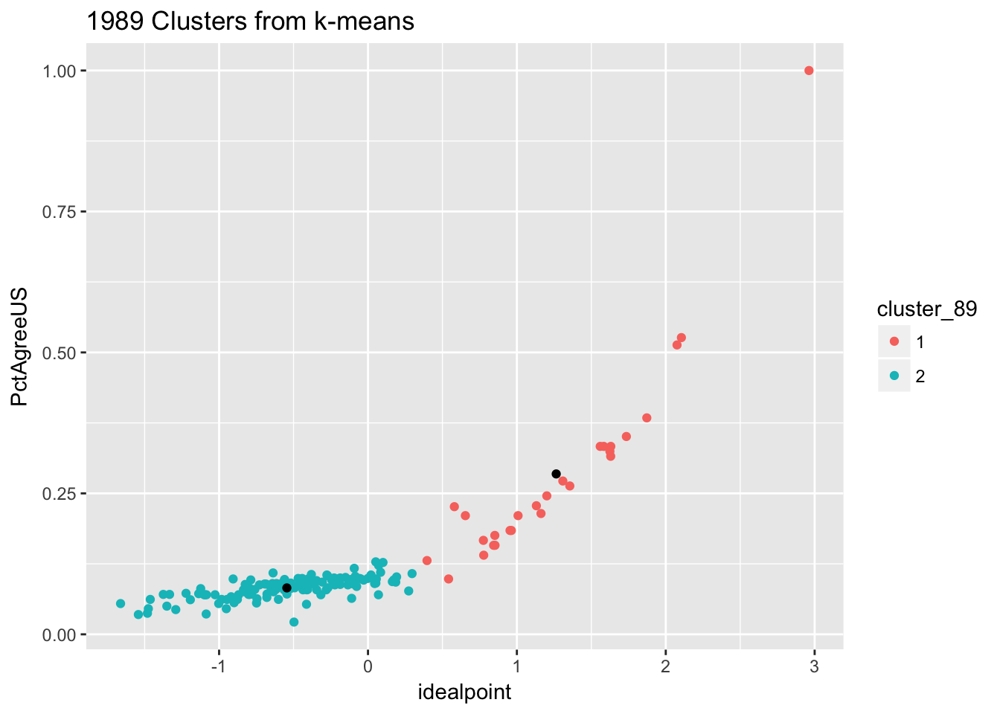
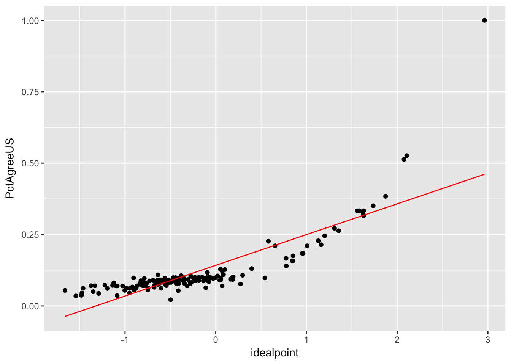
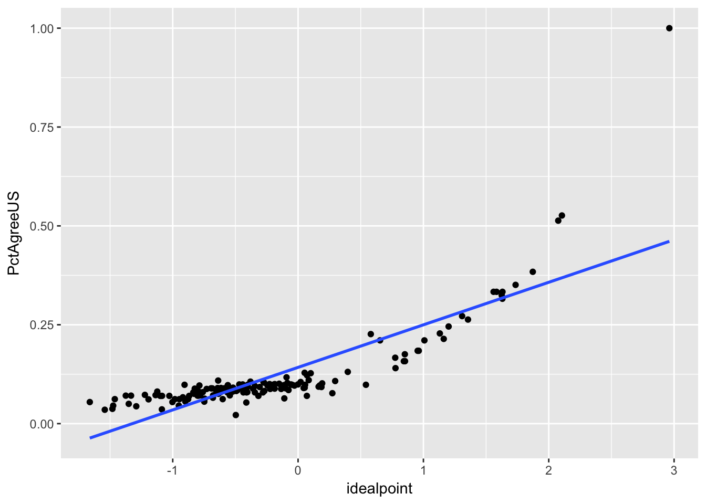
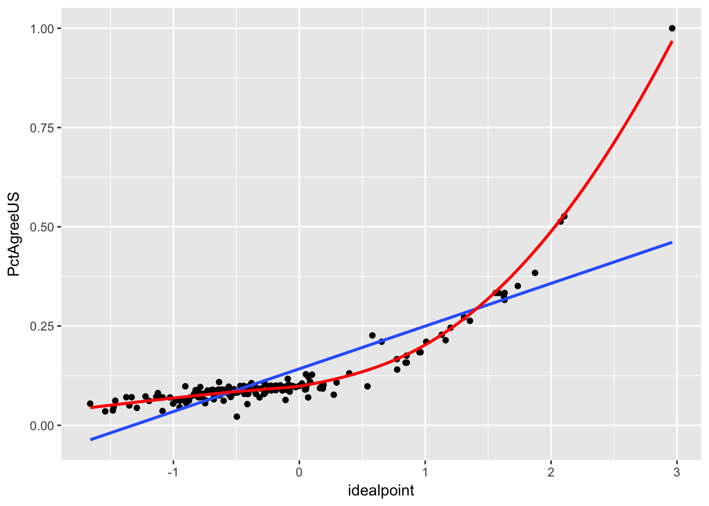

Reviewing k-means and regression with R challenges along the way
Adpating the QSSS code to use rio and download the data directly from github
library("rio")
library("tidyverse")
library("modelr")un <- import("https://raw.githubusercontent.com/kosukeimai/qss/master/MEASUREMENT/unvoting.csv")
# Looking at the homework k-means example
# Load the 1989 UN data
year.1989 <- un %>%
filter(Year == 1989) %>%
select(idealpoint, PctAgreeUS)
set.seed(4567)
cluster.89 <- kmeans(year.1989, centers = 2, nstart = 5)
## What exactly is IN the cluster.98 that we just made?
# What is it?
class(cluster.89)## [1] "kmeans"cluster.89## K-means clustering with 2 clusters of sizes 27, 131
##
## Cluster means:
## idealpoint PctAgreeUS
## 1 1.2642992 0.28448126
## 2 -0.5449349 0.08232694
##
## Clustering vector:
## [1] 1 1 2 2 2 2 2 2 2 1 2 2 2 2 2 2 2 2 2 2 2 2 2 2 2 2 2 2 2 2 2 2 1 2 2
## [36] 1 1 1 1 1 1 1 1 1 2 2 1 2 2 1 1 2 2 1 2 2 2 2 2 2 1 1 1 1 1 2 2 2 2 2
## [71] 2 2 2 2 2 2 2 2 2 2 2 2 2 2 2 2 2 2 2 2 2 2 2 2 2 2 2 2 2 2 2 2 2 2 2
## [106] 2 2 2 2 2 2 2 2 2 2 1 2 2 2 2 2 1 2 2 2 2 2 2 2 2 2 2 2 1 2 2 2 2 2 2
## [141] 2 2 2 2 2 2 2 2 2 2 2 1 2 1 2 2 2 2
##
## Within cluster sum of squares by cluster:
## [1] 9.659519 23.845518
## (between_SS / total_SS = 68.9 %)
##
## Available components:
##
## [1] "cluster" "centers" "totss" "withinss"
## [5] "tot.withinss" "betweenss" "size" "iter"
## [9] "ifault"summary(cluster.89)## Length Class Mode
## cluster 158 -none- numeric
## centers 4 -none- numeric
## totss 1 -none- numeric
## withinss 2 -none- numeric
## tot.withinss 1 -none- numeric
## betweenss 1 -none- numeric
## size 2 -none- numeric
## iter 1 -none- numeric
## ifault 1 -none- numericcluster.89$cluster## [1] 1 1 2 2 2 2 2 2 2 1 2 2 2 2 2 2 2 2 2 2 2 2 2 2 2 2 2 2 2 2 2 2 1 2 2
## [36] 1 1 1 1 1 1 1 1 1 2 2 1 2 2 1 1 2 2 1 2 2 2 2 2 2 1 1 1 1 1 2 2 2 2 2
## [71] 2 2 2 2 2 2 2 2 2 2 2 2 2 2 2 2 2 2 2 2 2 2 2 2 2 2 2 2 2 2 2 2 2 2 2
## [106] 2 2 2 2 2 2 2 2 2 2 1 2 2 2 2 2 1 2 2 2 2 2 2 2 2 2 2 2 1 2 2 2 2 2 2
## [141] 2 2 2 2 2 2 2 2 2 2 2 1 2 1 2 2 2 2# pull out the cluster assignments for each observation (country)
# so we can plot them later
year.1989 <- mutate(year.1989,
cluster_89 = factor(cluster.89$cluster))
# pulling out the centers for plotting -- way 1
cluster.89$centers## idealpoint PctAgreeUS
## 1 1.2642992 0.28448126
## 2 -0.5449349 0.08232694center1.x <- cluster.89$centers[1,1]
center1.y <- cluster.89$centers[1,2]
center2.x <- cluster.89$centers[2,1]
center2.y <- cluster.89$centers[2,2]
# way 2 -- using broom function tidy()
library("broom")
tidy.89.cluster <- tidy(cluster.89)
tidy.89.cluster## x1 x2 size withinss cluster
## 1 1.2642992 0.28448126 27 9.659519 1
## 2 -0.5449349 0.08232694 131 23.845518 2## ggplotting the results
ggplot() +
geom_point(data = year.1989,
aes(x = idealpoint, y = PctAgreeUS, color = cluster_89)) +
geom_point(data = tidy.89.cluster, aes(x = x1, y = x2)) +
labs(title = "1989 Clusters from k-means")
## Alternative
ggplot(year.1989) +
geom_point(aes(x= idealpoint, y = PctAgreeUS, color = cluster_89)) +
geom_point(aes(x = cluster.89$centers[1,1], y = cluster.89$centers[1,2]),
size = 3) +
geom_point(aes(x = cluster.89$centers[2,1], y = cluster.89$centers[2,2]),
size = 3) +
labs(title = "1989 Clusters from k-means")### Challenge time!
### What if we do a linear regression of idealpoint and PctAgreeUS? PctAgreeUS is the DV.
# What would the intercept be? What about the slope?
reg1 <- lm(PctAgreeUS ~ idealpoint, data = year.1989)
## what's in reg1?
reg1##
## Call:
## lm(formula = PctAgreeUS ~ idealpoint, data = year.1989)
##
## Coefficients:
## (Intercept) idealpoint
## 0.1422 0.1076reg1$coefficients## (Intercept) idealpoint
## 0.1422364 0.1075837# checking it out with broom functions:
glance(reg1)## r.squared adj.r.squared sigma statistic p.value df logLik
## 1 0.6857908 0.6837766 0.06000191 340.4844 4.660297e-41 2 221.328
## AIC BIC deviance df.residual
## 1 -436.6559 -427.4681 0.5616357 156tidy(reg1)## term estimate std.error statistic p.value
## 1 (Intercept) 0.1422364 0.004967469 28.63359 5.403816e-64
## 2 idealpoint 0.1075837 0.005830393 18.45222 4.660297e-41augment(reg1) %>% head()## PctAgreeUS idealpoint .fitted .se.fit .resid .hat
## 1 1.00000000 2.96213800 0.4609142 0.019246371 0.539085790 0.102888677
## 2 0.26315790 1.35558900 0.2880757 0.010434141 -0.024917825 0.030240100
## 3 0.09821429 -0.04779039 0.1370950 0.004897690 -0.038880689 0.006662732
## 4 0.03508772 -1.54220800 -0.0236800 0.008989237 0.058767716 0.022444788
## 5 0.09523810 -0.34502470 0.1051174 0.004815816 -0.009879312 0.006441836
## 6 0.09615385 -0.02895100 0.1391218 0.004923433 -0.042967940 0.006732957
## .sigma .cooksd .std.resid
## 1 0.03915990 5.159772e+00 9.4857057
## 2 0.06016083 2.772777e-03 -0.4217091
## 3 0.06011354 1.417642e-03 -0.6501604
## 4 0.06000553 1.126550e-02 0.9906109
## 5 0.06018989 8.845378e-05 -0.1651829
## 6 0.06009546 1.749858e-03 -0.7185326# How would we interpret the coefficients?
### plotting using grid
grid <- year.1989 %>%
data_grid(idealpoint) %>%
add_predictions(reg1)
head(grid)## # A tibble: 6 × 2
## idealpoint pred
## <dbl> <dbl>
## 1 -1.661769 -0.036542810
## 2 -1.542208 -0.023679996
## 3 -1.481247 -0.017121586
## 4 -1.475191 -0.016470059
## 5 -1.462281 -0.015081153
## 6 -1.374753 -0.005664567###
ggplot() +
geom_point(data = year.1989, mapping = aes(x = idealpoint, y = PctAgreeUS)) +
geom_line(data = grid, mapping = aes(x = idealpoint, y = pred),
colour = "red")
### plotting the regression line using geom_smooth
ggplot(data = year.1989, mapping = aes(x = idealpoint, y = PctAgreeUS)) +
geom_point() +
geom_smooth(method = "lm", se = FALSE)
## Compare this to the loess smooth line
ggplot(data = year.1989, mapping = aes(x = idealpoint, y = PctAgreeUS)) +
geom_point() +
geom_smooth(method = "lm", se = FALSE) +
geom_smooth(method = "loess", se = FALSE, color = "red")
######## Getting fancy!
## What happens if we have two covariates? idealpoint and PctAgreeRU?
year.1989.adj <- un %>%
filter(Year == 1989) %>%
select(idealpoint, PctAgreeUS, PctAgreeRUSSIA)
reg2 <- lm(PctAgreeUS ~ idealpoint + PctAgreeRUSSIA, data = year.1989.adj)
glance(reg2)## r.squared adj.r.squared sigma statistic p.value df logLik
## 1 0.8038852 0.8013546 0.04755621 317.6766 1.477616e-55 3 258.5653
## AIC BIC deviance df.residual
## 1 -509.1306 -496.8802 0.350547 155tidy(reg2)## term estimate std.error statistic p.value
## 1 (Intercept) 0.595594946 0.04709119 12.6476928 1.219055e-25
## 2 idealpoint 0.003215357 0.01174983 0.2736515 7.847168e-01
## 3 PctAgreeRUSSIA -0.548072203 0.05672997 -9.6610705 1.409879e-17tidy(reg1)## term estimate std.error statistic p.value
## 1 (Intercept) 0.1422364 0.004967469 28.63359 5.403816e-64
## 2 idealpoint 0.1075837 0.005830393 18.45222 4.660297e-41# How would you plot the results from this regression?
## Let's apply this regression stuff to your homework assignment! With R Markdown!!!